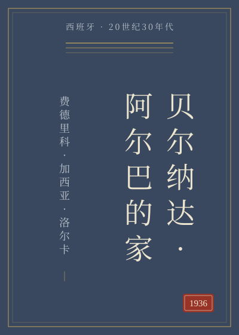
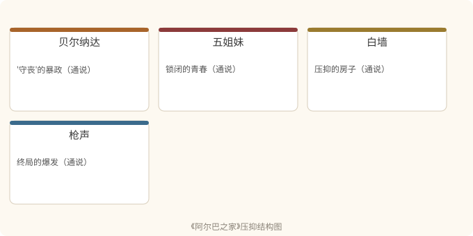

贝尔纳达·阿尔巴的家
一、基本信息
| 作者 | 费德里科·加西亚·洛尔卡 |
|---|---|
| 成书/出版 | 1936年（Britannica B355：La casa de Bernarda Alba (1936)） Federico Garcia Lorca — Encyclopaedia Britannica（百科全书） |
| 国别/地区 | 西班牙 |
| 时代 | 近代 · 20世纪30年代 |
| 体裁 | 悲剧 |
| 语言 | 西班牙语 |

《阿尔巴之家》压抑结构图（主题·结构图）
二、创作背景
Britannica（B355）：La casa de Bernarda Alba (1936)——民间悲剧三部曲之三（作者卒年作品）。
Britannica（B355）：洛尔卡1936年8月被杀（作者页交叉）。
题材（通说待核）：寡母贝尔纳达的'八年守丧'——五个女儿的锁闭与反抗。
三、内容脉络
（通说待核）丧服中的五姐妹与求婚者佩贝。
（通说待核）'白色的墙'：压抑的房子与最后一声枪响。
四、主要人物表
| 人物 | 身份 | 说明 |
|---|---|---|
| 贝尔纳达·阿尔巴 | 寡母 | （B355 书名人物） |
| 阿德莉亚 | 最幼女儿 | （通说待核） |
五、主题与艺术特点
- '守丧'与压制（通说待核）。
- 全女性剧（通说待核）。
- '纯洁'的暴政（通说待核）。
六、影响与评论
- Britannica：民间悲剧三部曲之三（B355）。
Federico Garcia Lorca — Encyclopaedia Britannica（百科全书） - Britannica：1936年被杀——未及见其上演（交叉——待核）。
Federico Garcia Lorca — Encyclopaedia Britannica（百科全书）
七、阅读建议
难点
- 全女班的舞台。
- 安达卢西亚的荣誉制。
- 《贝尔纳达·阿尔巴的家》中译名（《阿尔巴家的女人们》两说——通说待核）。
- 西班牙文原版。
三部曲之三；洛尔卡戏剧收官。
八、待核实
- 阿德莉亚/佩贝人名核对（通说）。
- 1936年写作、1945年首演说待核。
- '八年'守丧细节待核。
本页主要来源
费德里科·加西亚·洛尔卡的其他收录作品：吉普赛谣曲血婚叶尔玛贝尔纳达·阿尔巴的家